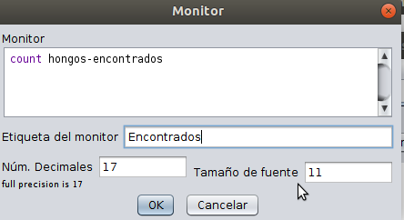

6 Análizando el Modelo
6.0.1 Introducción
Antes de realizar análisis específicos, me gustaría hablar de la exploración de un modelo de manera general, cuando no se tiene una pregunta o meta concreta de exploración de un modelo, es útil simplemente sondear las profundidades de lo que es posible en el comportamiento de un modelo. Los modeladores comúnmente exploran el comportamiento del modelo a su manera, haciendo variar los parámetros del modelo, probando diferentes combinaciones, ejecutando el modelo varias veces y mirando que pasa. Los modeladores podrían describir esta actividad simplemente como “jugar” con el modelo o familiarizarse con las cosas . Este proceso informal es natural (y diría que necesario) como parte del la comprensión del modelo, a través de retoques, los modeladores están sondeando el sistema para aprender algo al respecto. Es un proceso iterativo de desarrollar pequeñas hipótesis (o quizás simplemente “corazonadas”) sobre el modelo y su comportamiento, y probándolos. Cada vez que alguien juega y experiemnta con el modelo de esta manera, está intentando responder a la pregunta
“¿qué comportamiento del modelo producen estas configuraciones de parámetros?”
6.0.2 Cambios el modelo para el análisis (deslizadores)
Modificaremos el modelo construido en el taller anterior con el objetivo de efectuar un análisis básico de nuestro modelo.El Modelo Netlogo lo puede bajar del siguiente enlace (Dropbox):
El modelo , a pesar de su simplicidad, se presta a efectuar disferentes análisis, nos concentraremos a analizar el modelo con base en la pregunta o propósito inicial que tuvimos al construirlo:
“¿Qué estrategia de búsqueda maximiza el número de hongos encontrados en un tiempo específico?”
Si conservamos fijo el mundo de nuestro modelo, su tamaño al igual que el número de hongos del bosque (80 hongos) y nos concentramos en los dos agentes que buscan hongos, su estrategia de búsqueda está determinada por dos parámetros del modelo:
- El tiempo de espera para cambiar de modo de búsqueda
- Los ángulos de giro que efectuan los buscadores
Dejaremos “fijos” los ángulos y variaremos el tiempo de espera de los agentes para poder responder la siguiente pregunta:
"¿Cuál es el tiempo de espera que maximiza el número de hongos encontrados?
(Nota: Si se mantienen “fijos” el número de hongos y los ángulos de giro)
Antes de realizar el análisis hagamos los siguentes cambios al modelo:
- Fijar el ángulo amplio de búsqueda en : 85 + (random 5)
- Fijar el ángulo corto de búsqueda en : 5 + (random 5)
Cambie las tres primeras lineas del procedimiento search por:
ifelse time-since-last-found <= tiempo-espera
[right 85 + (random 5) ]
[right 5 + (random 5)]
- crear un deslizador para variar el tiempo de espera.
Para crear un deslizador, seleccione del menú de elementos de interfaz de NetLogo (Aparece con el nombre botón) la opción deslizador:
Haga clic debajo de los botones setup y go y aparece una ventana para llenar los datos del deslizador, llénela de la siguiente manera:
El Modelo se debe ver de la siguiente manera:
Listo!!!! Ya modificamos el modelo fijando un poco las variaciones de los ángulos y colocando un deslizador para poder variar el tiempo de espera, recordemos la pregunta inicial:
“¿Qué estrategia de búsqueda maximiza el número de hongos encontrados en un tiempo específico?”
Consideremos un tiempo específico, por ejemplo 800 unidades de tiempo (ticks), entonces la pregunta traducida a nuestro modelo modificado sería la siguiente:
“¿Qué valor de tiempo-espera produce que los buscadores optimizen el número de hongos encontrados si tienen 800 unidades de tiempo para encontrar los hongos?”
6.0.3 Posibles Preguntas
- ¿Existirá un único valor para este tiempo?
- ¿Será un tiempo pequeño? (por ejemplo menor que 20)
- ¿Será un tiempo grande? (por ejemplo mayor que 70)
- ¿Qué número máximo de hongos se pueden encontrar en estos 800 ticks? ( 24, 45, 57, 66)
- ¿Podran encotrar los buscadores más de 100 hongos en este periodo de tiempo?
Para poder buscar este número es importante modificar el modelo para que:
- el modelo pare cuando el número de ticks sea 800
- al parar, el modelo muestre cuantos hongos se han encontrado.
Haga estas modificaciones y luego:
- Juegue
- experimente
- investigue y me cuenta!!!!!!!!!!!!
Nuestra Pregunta inicial de búsqueda nos ha llevado a construir un modelo y a modificarlo con el fin de intentar reponder a la pregunta, hemos decidido (de pronto arbitrariamente) que el parámetro clave del modelo es el tiempo de espera de los buscadores para pasar de una búsqueda local a una búsqueda más global, entonces trataremos de responder a la pregunta:
¿Cuál es el tiempo de espera que optimiza el número de hongos encontrados?
Recordemos que vamos a limitar el tiempo que tienen los buscadores a 800 unidades de tiempo, que si pensamos que cada unidad de tiempo es digamos 10 segundos, el tiempo de búsqueda sería 10*800= 8000 segundos que corresponde a algo mas de 133 minutos ó 2 horas y 15 minutos aproximadamente.
6.0.4 Reporteros
Es importante contabilizar en cada momento el número de hongos encontrados, así que vamos a definir una función que reporte este valor:
Escriba al final de la Pestaña de Código del modelo lo siguiente
to-report hongos-encontrados
report patches with [pcolor = yellow]
end
el reporter hongos-encontrados reporta el conjunto de parcelas que tienen color amarillo (patches with [pcolor = yellow]) o sea los hongos encontrados Para ver este reportero en acción vamos a definir un monitor que nos permita visualizar en la interfaz de NetLogo el número de hongos-encontrados a medida que el modelo está corriendo.
Vaya a la pestaña interfaz, del menú botón seleccione el elemento monitor:
Haga clic debajo del deslizador tiempo-espera, aparece una ventana llénela de la siguiente manera:

El monitor usa una función importante count que cuenta el número de elementos de un conjunto de agentes (en este caso de parcelas amarillas) Corra el modelo (setup y luego go) y observe como el monitor muestra los hongos encontrados a medida que los buscadores los encuentran:
Este monitor es una ayuda importante al análisis del modelo y en este momento podríamos jugar con el modelo y tratar de encontrar el tiempo de espera ideal:
- Deslizando tiempo-espera y colocando diferentes valores
- observando el valor del monitor de hongos encontrados.
Al jugar y experimentar con el modelo podríamos descubrir valores de tiempo de espera que pueden conducir a optimizar los hongos encontrados, pero muy pronto nos damos cuenta que:
- Los valores posibles de tiempo-espera son muchos
- Recolectar información de hongos encontrados para diferentes valores puede ser dispendioso y demorado.
Podríamos correr el modelo con diferentes valores de tiempo-espera y registrar los hongos encontrados luego de 800 ticks y luego llevar eso a una hoja electrónica para analizar la información, pero hay una manera mucho mejor de hacerlo en NetLogo y es usar el Analizador de Comportamiento
6.0.5 El Analizador de Comportamiento
La funcionalidad que ofrece BehaviorSpace es la de ejecutar muchas veces un modelo, modificando para cada ejecución sus parámetros y grabando los resultados que el usuario decida. Proporciona una forma de explorar secciones del espacio de posibles comportamientos y determinar, por ejemplo, qué combinaciones de configuraciones definen comportamientos interesantes o compararlas entre sí para ver la influencia de los parámetros en la dinámica BehaviorSpace ofrece así una forma ordenada y metódica de rea- lizar la exploración del espacio de parámetros. Una exploración que, aunque la mayoría de las veces no podrá ser exhaustiva, si se diseña adecuadamente permitirá una aproximación más eficiente a la comprensión del modelo.Además, los datos almacenados en cada experimento se graban en formatos que permiten ser analizados posteriormente con herramientas específicas de análisis de datos, en nuestro caso usaremos R y Rstudio
Para abrir el Analizador de Comportamiento, vaya al menu Herramientas y seleccione la opción Analizador de Comportamiento:
Aparece la siguiente ventana:
Haga Clic en Nuevo, al hacer clic aparece una ventana que nos permitirá definir lo que se denomina un experimento, que es simplemente una manera de decirla a NetLogo que datos y cuantos datos quiero generar del modelo:
LLenemos esta ventana de la siguiente manera:
Miremos como se lleno la información
Oprima el botón Ok, aparece la siguiente ventana:
Oprima el botón Ejecutar, aparecen las opciones para generar los datos:
Seleccione la opción Table Output y oprima Ok, aparece un cuadro de diálogo para guardar los datos, guarde los datos en el mismo directorio odnde se encuentra el modelo NetLlogo, no le cambie el nombre al archivo exportado:
Listo!!! Ya guardamos el archivo de datos generado por nuestro modelo
6.0.6 Analizando los datos en R
Ahora vamos a abrir Rstudio-Cloud para importar los datos y analizarlos Vaya a Rstudio cloud ( si no esta registrado registrese y cree una cuenta), al entrar verá lo siguiente:
Haga clic en New Project y cuando aparezca la interfaz de Rstudio, coloque en la parte superior el nombre al proyecto : BuscHongos:
Cree un Nuevo Script (un Script de R es un archivo donde colocaremos los diferentes comandos para imoportar los datos y analizarlos):
Salve el Archivo con Nombre,BuscHongos.Rmd:
Vamos a importar la libreria que usaremos para nuestro analisis (tiduverse),
para ello seleccionemos la opción insert chunk del menu code, esto crea un espacio dentro del archivo para colocar codigo R:
Coloque las siguientes lineas dentro del chunk de código:
install.packages(tidyverse)
library(tidyverse)
Sale el mensaje que el paquete tidyverse no está instalado haga clic en install y espere unos minutos que Rstudio instale los paquetes.
Finalmente hay que cargar el archivo de datos netLogo al proyecto Rstudio para ello haga clic en el botón Upload situado en la vbentana inferior derecha de Rstudio:
Busque el Archivo que generamos en Netlogo en su computador (“BusHongosAnalisis Anal1SerieTiempo-table.csv”) y carguelo, debe aparecer en Rstudio el archivo cargado:
Ahora coloquemos en el Archivo Script lo siguiente:
Oprima el botón Play situado en la parte derecha del chunk que lle os datos, debe aparecer a la derecha el archivo de datos (data), con la información : 2403 obs. of 4 variables, si oprima la fila donde aparece data puede observar los datos generados por NetLogo:
Renombremos las columnas con el comando:
colnames(data)<- c("run","tiempoEspera","ticks","encontrados")
finalmente grafiquemos los datos:
ggplot(data)+
geom_point(aes(ticks,encontrados,
group=tiempoEspera,
color=factor(tiempoEspera)))Debe aparecer la siguiente gráfica: